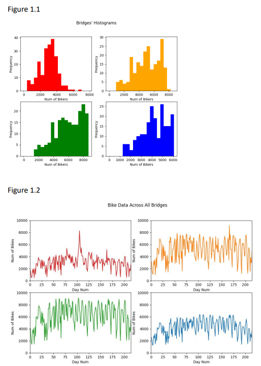

BRIDGES SENSORS PROJECT
This is a project I worked on in my sephomore year. This project is to install sensotrs on the three of the four bridges to estimate overall traffic. I did the analysis based on the data given and in order to predict the final result. 
Above is the first part of the prject which my partner and I decided to put three sensors on Brooklyn, Queensboro, and Manhattan bridges. We used the maximum, minimum, mean, and standard deviation with code support to get the final graph of each bridges' spreadout, and then choose three of four most unique bridges to put on sensors.
For the next part of the project I did code analysis on given data of number of bicycles on bridges related to weather, in order to make prediction on number of bicycles by giving the forecast. By using the crossed validation and split the data, I normalize the data based on the given sets in order to build the linear model. In python, I mainly used the sklearn python technics to determine the coefficients of the model, by knowing the model it is easy to predict the final number of bicycles based on next day's forecast. For the last part of this project
Here is Final Report